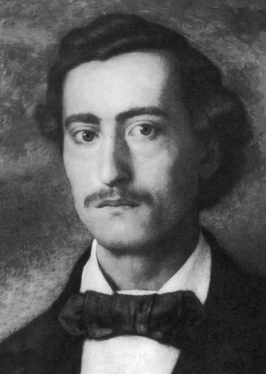

 Бранко Радичевић (Славонски Брод, 28. март 1824 — Беч, 1. јул 1853) је био српски романтичарски песник. Радичевић је уз Ђуру Даничића био најоданији следбеник Вукове реформе правописа српског језика и увођења народног језика у књижевност. Написао је свега педесет четири лирске и седам епских песама, два одломка епских песама, двадесет осам писама и један одговор на критику. Бранко Радичевић је поред Јована Јовановића Змаја и Лазе Костића био најзначајнији песник српског романтизма. У спомен на песничку заоставштину Б. Радичевића сваке јесени на Стражилову, у С. Карловцима и Новом Саду одржава се манифестација Бранково коло.
Са Бранком Радичевићем су у националну књижевност први пут ушле песме са изразито лирским мотивима и расположењем. Те песме су првенствено певале о радости и лепотама младости. Ипак, већи део својих песама, као што су „Кад млидија' умрети“ или Ђачки растанак Радичевић је писао као елегије (тужне песме). У јеку Вукових полемика са противницама реформе српског језика, Радичевића прва збирка песама је доказала да се и на народном језику могу испевати уметничке песме. Најпознатије Радичевићево дело је поема Ђачки растанак, у којој је опевао Фрушку гору, ђачке игре и несташлуке. . Елегија „Кад млидијах (размишљах) умрети“, објављена после Радичевићеве смрти, је једна од најлепших елегија у српској књижевности, у којој је песник предосетио блиску смрт. Поред лирских песама, љубав према народној поезији упутила је Радичевића и на писање епских песама. Две епске песме изашле су 1851. године као друга збирка песама. Остале необјављене песме су издане у збирци из 1862. године Бранко Радичевић се првенствено угледао на народну десетерачку песму и на Џорџа Бајрона, али није успео да створи озбиљнија уметничка дела, па његов рад није доживео славу његових лирских песама. Као присталица Вукових схватања, Радичевић је написао алегоричну-сатиричну песму „Пут“, уперену против псеудокласичарске поезије и старог књижевног језика. У првом делу песме Радичевић исмева највећег Вуковог противника Јована Хаџића, а у другом делу песме се величају реформе Вука Караџића.